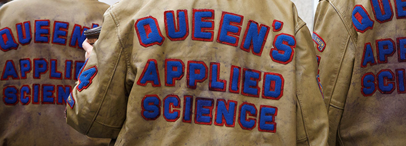

This is just a taste of who Christopher Rescorla is. I was born in Utah but more or less raised in Timmins, Ontario. Being an American in Canada and being stubborn made me fairly pro US over pro Canada, so I won't do something silly like spell color colour, although travelling makes more sense than traveling.
So a lot of what defines me is what I took of both cultures (and there is a difference) and decided to keep. I also am very much a nerd, given the modern vernacular. I enjoy Sci-Fi, computer stuff like programming, graphics and even just building one. Mac vs. PC? Definitely PC, although this site is built on both.
A general overview of myself is not the easiest thing for me to do, so here are a few of my interests which may fill in the gaps.

I am an Engineer by training. I went to the finest University in the world, Queen's University, and was in the best faculty there, Applied Science. If you don't believe those are the best, participate in Frosh Week there...the indoctrination is strong.
There is a lot of tradition there, more so than most Candian universities. I'm sure wiki will have a lot of what those traditions are, but suffice it to say, it's a big unifying factor in the school at many levels. To the left is the year crest for my graduating class, go Sci '97! It was there that I learned the difference between Science and Engineering teaching. In science, they expect you to know everything off the top of your head. In engineering, they know that in the real world, if you don't know something, you'll look it up.
I also had a professor that said "Every time you make a binary decision, you'll make the wrong choice" and sadly that's proven true more often than not. It was a lot of work, but a lot of fun and I wouldn't change it for anything. Cha Gheill!

The Golden Party Armor slightly purpled up